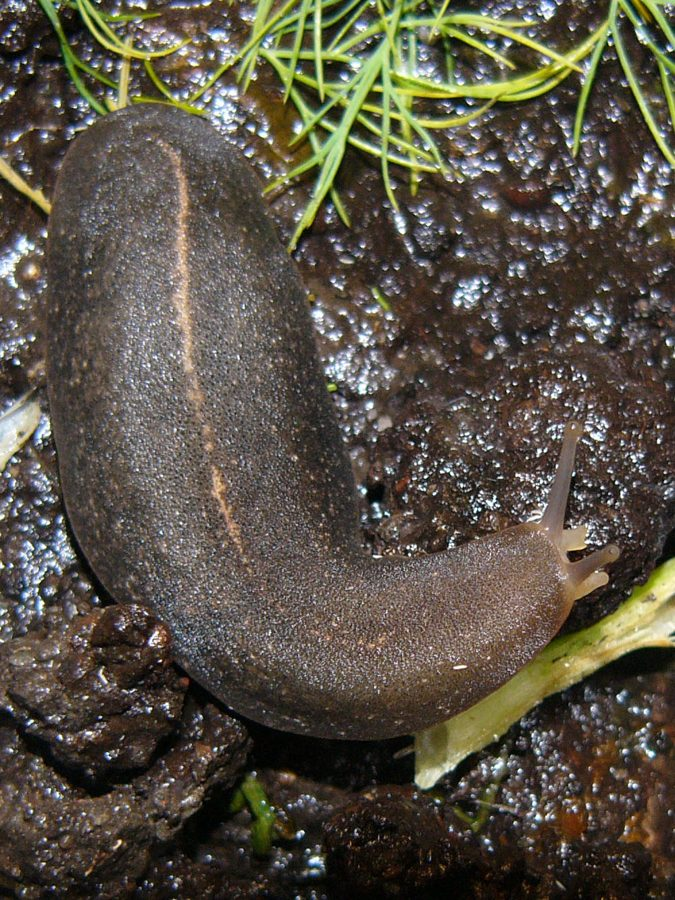

काला स्लगTropical Leatherleaf Slug
Laevicaulis alte · Veronicellidae · MOL-0010

- Scientific name
- Laevicaulis alte (Férussac, 1822)
- Family
- Veronicellidae
- Hindi
- काला स्लग
- Local names
- kala slug, slug, ghongha bina khol, black slug
- Status here
- invasive
- IUCN
- LC
- Review
- audited and independently read
When to look कब देखें
Present all year.
Uses and possibilities उपयोग और संभावनाएँ
Drawn from the documented uses in the profile below, where each is labelled traditional, current or a research lead. All uses →
काला स्लग / Tropical Leatherleaf Slug
Laevicaulis alte (Férussac, 1822) — Veronicellidae
काला स्लग — अफ़्रीका से आई काली, चिकनी, बिना घोल वाली मछली, जो गीली जगहों में छुप कर रहती है और रात को सब्ज़ियों और सड़ी चीज़ों को खा जाती है। दिन में गीले पत्तियों के नीचे, कीचड़ में, गमलों के नीचे लुकी। बहुत पिचला, लेदर जैसा, काला। अकेली नहीं, अक्सर कई एक जगह मिलती हैं।
Quick Identification त्वरित पहचान
| Feature | Description |
|---|---|
| Size | 40–80 mm total length; 10–20 mm width; among the larger slugs |
| Shape | Elongate, cylindrical, slightly flattened ventrally |
| Colour | Dark brown to black; sometimes mottled with lighter patches; uniform in colour |
| Texture | Smooth, shiny, leather-like; without a shell or shell remnant |
| Mantle | Covers the anterior (front) half of the body; where the reproductive organs open |
| Sole | The foot is marked by a median line |
| Mucus trail | Copious, colourless slime; a slug cannot move without it |
Field tip: A black or dark brown, smooth, shiny slug of medium size, leaving a broad slime trail. Hides in mulch, under objects and in moist leaf litter by day; emerges at night or in rain. The lack of a shell and the leather-like texture distinguish it from snails and other slugs. Most often found in disturbed gardens and cultivated areas, not in natural habitats.
हिंदी — कैसे पहचानें: काली, चिकनी, चमकदार, बिना घोल, चिपचिपी लीद छोड़ती हुई। दिन में पत्तियों के नीचे, मिट्टी में, गमलों के नीचे, गीली जगहों में छिपी।
Morphology आकारिकी
Biometrics:
| Measurement | Range |
|---|---|
| Total length | 40–80 mm |
| Width | 10–20 mm |
| Height | 5–10 mm |
| Eggs per clutch | 10–30 |
| Clutches per year | 3–5 |
Body: No shell or shell vestige. The mantle covers the anterior third of the body and is wrinkled with concentric grooves. The foot is broad and muscular, with a distinct median line dividing it lengthwise. The sole is granular. Pairs of tentacles: upper pair bears eyes at the tips; lower pair used for sensory testing.
Reproduction: Hermaphroditic (each individual has both male and female organs). Mating involves reciprocal copulation. Eggs are laid in clusters in soil crevices, under bark and in moist microhabitats; no parental care.
Feeding apparatus: A radula (tooth-ribbon) for rasping plant material and fungi; capable of consuming a wide range of vegetation.
हिंदी: खोल नहीं। अगला तिहाई हिस्सा आवरण से ढका, सिकुड़ी हुई सतह। पैर चौड़ा, बीच में लकीर। ऊपर की दो सींगें आँखों के साथ। नीचे की दो सींगें पीछे संवेदना के लिए। सब अंग-भंग एक ही जानवर में।
Behaviour & Ecology व्यवहार और पारिस्थितिकता
A nocturnal generalist, active in moist conditions. It hides in soil, leaf litter, under stones and fallen bark, and in moist microhabitats where the moisture remains high and the snail is protected from drying. It emerges at dusk and throughout the night to feed on living plants, fungi, algae and decaying vegetation. Being a slug without a shell, it loses water rapidly and must remain in or near moisture; during the dry season it retreats into damp soil or disappears entirely. In monsoon and cool seasons, it is abundant.
Unusually among slugs, Laevicaulis includes in its diet other slugs and small snails, and plays a dual role as both herbivore and carnivore. This makes it a generalist predator and competitor, and allows it to persist even when plant food is scarce.
हिंदी: रात को निकलता है। पानी की ज़रूरत ज़्यादा क्योंकि खोल नहीं। सब्ज़ियाँ, कवक, सड़ी चीज़ें, और दूसरी स्लग-घोंघे भी खाता है। गरमी में गायब; बरसात में निकल आता है।
Life Cycle / Phenology जीवन चक्र
| Stage / season | Event |
|---|---|
| March–May | Emergence from dormancy; feeding in warming weather; mating begins |
| May–October | Egg-laying in soil and mulch; continuous reproduction in moist months |
| Eggs, 1–2 weeks | Laid in clusters; no parental care; hatching in moist soil |
| Juveniles, 4–8 weeks | Feeding on decaying matter and fungi; rapid growth in warm conditions |
| 2–3 months | Sexual maturity at 20–30 mm |
| June–October | Peak activity and visible damage in monsoon and cool months |
| November–February | Reduced activity; feeding slows in cool months |
| March–May | Heat dormancy; retreat to deep moist soil; no feeding |
| Lifespan | 1–2 years |
हिंदी: मार्च में जागना; मई से अक्टूबर तक प्रजनन; अंडे मिट्टी में; एक-दो हफ़्ते में निकलते हैं; दो-तीन महीने में बालिग़; गरमी में सोना; एक-दो साल की उम्र।
Host Plants or Prey आहार
- Plants: Seedlings, young leaves of vegetables, ornamental plants, and crop plants.
- Fungi: Various fungi and mould on decaying vegetation.
- Other molluscs: Smaller slugs and snail eggs; a predator as well as herbivore.
- Decaying matter: Leaf litter and compost.
Predators / Natural Enemies शत्रु
- Carnivorous snails: Predatory slugs and snails.
- Reptiles: Bengal Monitor and skinks on small individuals.
- Birds: Crows and mynas (limited, as the protective slime may deter some birds).
- Humans: Handpicked and crushed; removal by direct contact (with gloves).
Agricultural / Human Relevance कृषि प्रासंगिकता
Pest status. A pest of vegetables and ornamental plants in horticultural areas, particularly in monsoon. Seedlings and young plants are damaged; large plants are usually not seriously harmed but may show feeding marks. The damage is less severe than that of the giant African snail because of its smaller size.
Decomposer. Also feeds on fungi and decaying matter, potentially beneficial in compost and mulch systems.
Control. Habitat management—removing mulch and leaf litter where slugs hide—is the primary control. Handpicking is possible but tedious. No pesticide is widely recommended for slug control in India.
Traditional and Ethnobotanical Use: none; an arrival of the late 20th century.
Today. Locally common in horticultural areas and disturbed habitats with moisture.
Research direction (a lead, not a result). The distribution and abundance of L. alte in Uttar Pradesh is poorly documented. A survey of occurrence in horticultural and agricultural areas would establish the current range and allow assessment of the risk to crops.
हिंदी: सब्ज़ी और बागवानी का छोटा कीड़ा। चारे को खा जाता है, सड़ी चीज़ों को भी। नियंत्रण: पत्तियों का ढेर हटाना, हाथ से तोड़ना।
Expected Locally स्थानीय रूप से अपेक्षित
Not a field record. Written from published accounts for eastern Uttar Pradesh. No confirmed local sighting yet — if you have seen it, that is what the atlas needs.
अभी तक स्थानीय पुष्टि नहीं। यह विवरण प्रकाशित स्रोतों से है, किसी अवलोकन से नहीं।
To be expected in moist gardens and cultivated areas with mulch in the district, particularly in monsoon. A photograph or a specimen is a confirmed record.
Distribution वितरण
Global range: Native to Africa; introduced to Asia, the Caribbean and other tropical regions; now widespread in warm, moist climates.
In India: Present in many states, particularly in horticultural areas in Kerala, Tamil Nadu, Maharashtra and other southern and central states; status in Uttar Pradesh uncertain.
In Uttar Pradesh: Occurrence unconfirmed; likely present in horticultural areas in some districts.
In Basti district / eastern UP: Status unknown; to be confirmed by field survey.
Research Questions शोध प्रश्न
Anyone can investigate these | कोई भी इन प्रश्नों की जाँच कर सकता है
- Is the tropical leatherleaf slug present in your village, and where? / क्या आपके गाँव में काला स्लग है? — Ask in gardens and nurseries.
- How many slugs can be found under one square metre of mulch in monsoon? — Count in a measured area.
- Which plants does it feed on, and what is the damage? — Document feeding preferences.
- Does removal of mulch reduce the slug population? — Compare a mulched and unmulched garden bed.
- Can the slug be excluded from a vegetable bed with a simple barrier? — Test with a barrier on one side only.
Similar Species मिलती-जुलती प्रजातियाँ
| Species | How to tell apart | हिंदी |
|---|---|---|
| Giant African Snail (Lissachatina fulica) | Much larger (80–100 mm); has a shell; conical shape | बहुत बड़ा, घोल है |
| Other slugs (Limax, Arion spp.) | Smaller or different colours; varied mantle patterns | अलग-अलग रंग |
| Small snails | Have a visible shell; move slower | घोल है, धीमे |
Field rule: A black or dark brown, smooth, shiny slug of medium size without a shell, leaving a copious slime trail, is the tropical leatherleaf slug; the leather-like texture and black colour are distinctive.
Taxonomy & Classification वर्गीकरण
Original description. Described by Férussac in 1822. Placed in various genera; the current genus Laevicaulis was defined to distinguish it from other tropical slugs.
Subspecies. Not formally subdivided; the species is geographically variable.
Family and order placement. Veronicellidae, the semi-slugs and slugs of the tropics; order Stylommatophora. The family is diverse and mainly tropical.
Phylogenetic notes. Laevicaulis belongs to the Veronicellidae; its exact position within the family is debated.
IUCN status rationale. Least Concern. Abundant in invaded regions; expanding in range.
Photo Gallery फोटो गैलरी
Photos needed आवश्यक फोटो
- [ ] Whole slug on leaf litter (पत्तियों पर पूरा स्लग)
- [ ] Close-up showing texture and tentacles (सतह और सींगें)
- [ ] Slime trail on soil (मिट्टी पर लीद की लकीर)
References संदर्भ
- Férussac, A.E. (1822). Histoire Naturelle Générale et Particulière des Mollusques. Paris. [original description]
- Cowie, R.H., Dillon, R.T., Jr., Robinson, D.G. & Smith, J.W. (2009). Alien non-marine snails and slugs of priority quarantine importance in the United States: a preliminary risk assessment. American Malacological Bulletin 27: 113–132.
- Manna, B. (1968). A guide to common Indian land slugs. Proceedings of the Indian National Science Academy 34B: 238–246.
- Baker, H.B. (1951). A revision of the classes Pulmonata. Bulletin of the American Museum of Natural History 96: 1–237.
- Davison, A., Reise, H., Sun, J., Botting, H., Wade, C.M. & Naggs, F. (2006). Taxonomic revision of the land snail genus Limax. Zoological Journal of the Linnean Society 147: 191–221.
- GBIF Occurrence Data — Laevicaulis alte, India (2026).
Source file: species/fauna/mollusks/leatherleaf_slug.md